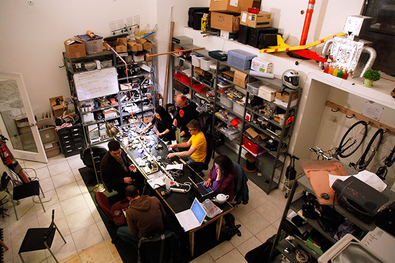

Laboperatørene
Laboperatørene har mange ulike ansvarsområder på Hackerspace. Det er de som har anvaret for alt av utstyr som er der inne, organiseringen og innkjøp av nytt utstyr. Viss folk kommer inn og vil ha noe utstyr er det laboperatørene som har ansvaret for å skaffe det. Laboperatørene er også dei som har ansvaret for å arrangere arrangement som f.eks. workshop i arduino eller kurs i 3D-modellering.